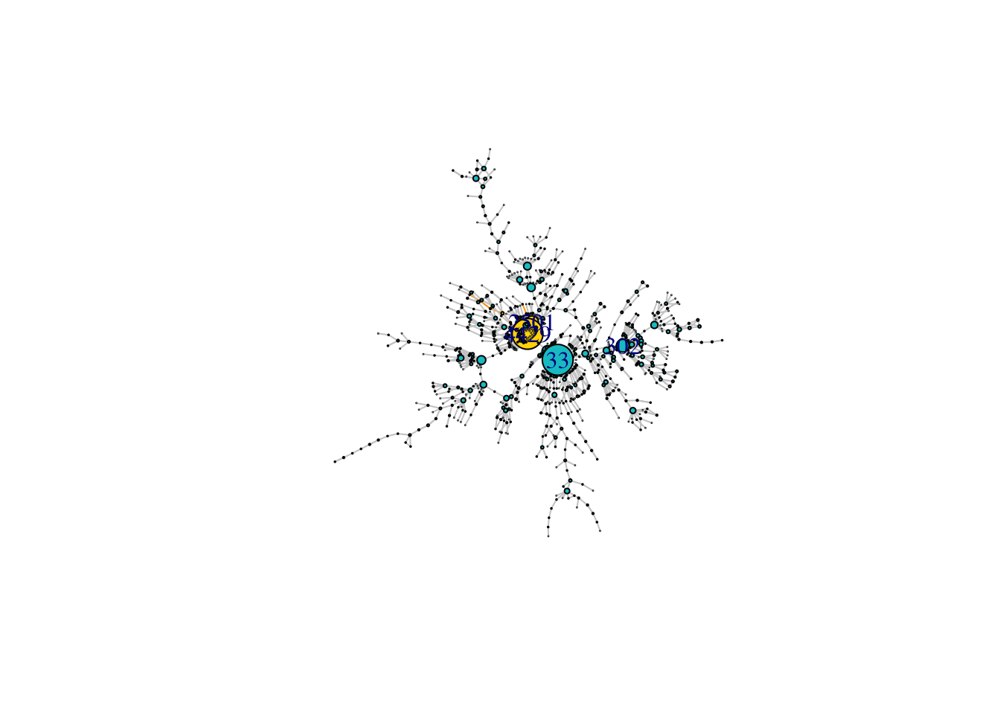

Social Network Analysis
Huiyin(Cloris) He
3/22/2021
Part 1. Subset data
Delete products that are not books from “products” and “copurchase” files. And then delete the books with salesrank>150,000 or salesrank = -1.
library(sqldf)
library(dplyr)
library(plyr)
library(igraph)
####1. filter data####
#only 'Book' with salesrank<=150,000 and salesrank not= -1
product1=product[product$group=='Book' & product$salesrank<=150000 & product$salesrank!=-1,]
purchase1=purchase[which(purchase$Target %in% product1$id),]
purchase1=purchase1[which(purchase1$Source %in% product1$id),]Part 2. in-degree
Create a variable named in-degree, to show how many “Source” products people who buy “Target” products buy.
####2. in-degree####
n=graph_from_data_frame(purchase1, directed=T)
indegree=degree(n, mode="in")Part 3. out-degree
Create a variable named out-degree, to show how many “Target” products people who buy “Source” products also buy.
####3. out-degree####
outdegree=degree(n, mode="out")Part 4. Subcomponent
Pick up one of the products (in case there are multiple) with highest degree (in-degree + out-degree), and find its subcomponent (all the products that are connected to this focal product).
####4. Highest degree####
alldegree=degree(n, mode="all")
max(alldegree) #53## [1] 53#find out which id is the highest
max=alldegree[which(alldegree==max(alldegree))]
max## 4429 33
## 53 53#Source id=33 with highest degree of 53
subc=subcomponent(n,'33',mode='all')
length(subc)## [1] 904#convert to a vector of ids
subc=as_ids(subc)There are 2 products with the highest degree of 53: product 33 (Double Jeopardy (T Witches, 6)) & product 4429 (Harley-Davidson Panheads, 1948-1965/M418) and we picked the product 33 (Double Jeopardy (T Witches, 6)) for the following analysis based on its 904 subcomponents.
#subset subcomponent from the copurchase data
sub=purchase1[purchase1$Source %in% subc|purchase1$Target %in% subc,]
#subset subcomponent from the product data
subid=product1[product1$id %in% subc,]Part 5. Visualization
Visualize the subcomponent using iGraph
####5. visuals####
subn=graph_from_data_frame(sub,directed=T)
#2nd way to do it: subn=subgraph(n,subc)
E(subn)## + 1173/1173 edges from ff3cd69 (vertex names):
## [1] 77 ->422 130 ->78 148 ->302 187 ->78 187 ->321 187 ->322
## [7] 193 ->224 224 ->33 224 ->193 321 ->78 321 ->187 321 ->322
## [13] 322 ->78 322 ->187 322 ->321 422 ->77 422 ->1644 556 ->78
## [19] 577 ->33 626 ->33 724 ->302 1051->302 1644->422 1644->5293
## [25] 1817->976 1822->193 1822->724 1851->78 1971->193 2071->3155
## [31] 2210->2279 2210->2285 2279->2210 2279->2326 2285->2330 2326->193
## [37] 2326->2210 2330->2343 2330->2345 2332->4140 2343->2285 2343->2330
## [43] 2423->5410 2470->556 2501->3588 2505->2501 2558->33 2572->4184
## [49] 2572->4185 2657->2658 2658->77 2806->2807 2807->302 2959->1673
## [55] 3032->2558 3119->976 3191->2279 3217->4319 3306->2071 3306->4345
## + ... omitted several edgesV(subn)## + 904/904 vertices, named, from ff3cd69:
## [1] 77 130 148 187 193 224 321 322 422 556
## [11] 577 626 724 1051 1644 1817 1822 1851 1971 2071
## [21] 2210 2279 2285 2326 2330 2332 2343 2423 2470 2501
## [31] 2505 2558 2572 2657 2658 2806 2807 2959 3032 3119
## [41] 3191 3217 3306 3427 3588 3670 3737 3861 3909 4002
## [51] 4014 4038 4068 4099 4140 4174 4184 4185 4222 4223
## [61] 4345 4429 4977 4993 4994 5018 5059 5163 5164 5293
## [71] 5355 5388 5623 5638 5639 5655 5670 5821 5851 5875
## [81] 6012 6014 6058 6059 6392 6411 6445 6546 6711 6713
## [91] 6807 6808 6817 6942 7196 7198 7222 7233 7325 7376
## + ... omitted several vertices#diameter
diameter(subn, directed=T)## [1] 9diam <- get_diameter(subn, directed=T, weights=NA)
class(diam)## [1] "igraph.vs"as.vector(diam)## [1] 332 265 226 138 140 162 62 30 45 837#Final plot
V(subn)$label <- V(subn)$name
V(subn)$degree <- degree(subn)
V(subn)$color<-"turquoise3"
V(subn)$color[diam]<-"gold1"
ecol <- rep("gray80", ecount(subn))
ecol[E(subn, path=diam)] <- "orange"
# layout kamada.kawai
plot(subn,
vertex.color=V(subn)$color,
vertex.size= V(subn)$degree*0.3,
edge.arrow.size=0.01,
vertex.label= ifelse(degree(subn) > 20, V(subn)$label, NA),
edge.color=ecol,
layout=layout.kamada.kawai)
The social graph shows two main groups, one with Id 33 in the center: Double Jeopardy (T Witches, 6), another one represented with Id 4429 in the center: Harley-Davidson Panheads, 1948-1965/M418.
Between 4429 and 33, there is a local bridge. It ties between two groups in a social graph that are the shortest route by which information might travel from those connected to one to those connected to the other. If the local bridge is removed, the distance between these two groups will increase. Also, the lack of the local bridge will significantly reduce the probability of co-purchasing behavior between the two groups and the frequency of products being bought.
The diameter, shown in yellow in the graph, is the longest path we can find among all the shortest distances of the vertices. The diameter is 9 and the nodes within this path are Id 37895, 27936, 21584, 10889, 11080, 14111, 4429, 2501, 3588, and 6676.
The size of the bubble is determined by how many connections they have with the other nodes. The larger the bubble, the more nodes link to it. And thus, from the graph, we can see that Id 33 and 4429 are the two biggest nodes that have the most connections. The smaller nodes spread on the edges of the network indicate fewer connections. The number of connections between nodes show how strong the relationship between the nodes are. The nodes clustered in the middle of the graph have a stronger relationship while the nodes that are spread around the border with long ties show a weaker relationship. And those products with long ties which only have 1-2 edges can be easily separated from the whole network.
Part 6. Statistics
Compute various statistics about this network
####6. Statistics####
# Degree Distribution (number of ties)
newg_all_degree <- degree(subn, mode="all")
deg_dist<- degree.distribution(subn,cumulative = FALSE, mode="all")
plot(x=0:max(newg_all_degree), y=deg_dist,pch=19, cex=0.9,col="black", xlab="Degree", ylab="Frequency")#density
density=edge_density(subn, loops=F)
density## [1] 0.001436951#check:ecount(subn)/(vcount(subn)*(vcount(subn)-1))
# Node degrees
deg <- degree(subn, mode="all")
hist(deg, xlab = "number of degree")
#centrality
centr_d=centr_degree(subn)
# Closeness (centrality based on distance to others in the graph)
# Inverse of the node's average geodesic distance to others in the network
closeness=closeness(subn, mode="all", weights=NA)
# Betweenness (centrality based on a broker position connecting others)
# (Number of geodesics that pass through the node or the edge)
betweenness=betweenness(subn, directed=T, weights=NA)
edge_betweenness=edge_betweenness(subn, directed=T, weights=NA)
#Hub scores (max outgoing links)
hub=hub.score(subn)$vector
#authority scores (max incoming links)
auth=authority.score(subn)$vector
#create a table for stats
id=V(subn)$name
stat <- as.data.frame(id)
stat <- stat%>%
mutate(degree = degree(subn, mode="in"), closeness = closeness, betweenness = betweenness,
hub= hub, authority = auth)
head(stat)## id degree closeness betweenness hub authority
## 1 77 3 9.045681e-05 12 2.239872e-16 4.449831e-17
## 2 130 1 1.077935e-04 1 5.531568e-04 2.473186e-17
## 3 148 1 1.009897e-04 2 3.592652e-05 2.567663e-17
## 4 187 3 1.076774e-04 2 5.989914e-04 2.431071e-05
## 5 193 10 1.414227e-04 40 3.880532e-16 2.317514e-02
## 6 224 2 1.496110e-04 31 9.836847e-01 5.135327e-17Part 7. New variables
Create a group of variables containing the information of neighbors that “point to” focal products.
####7. Neighbors####
#reorder table
subid=subid[match(V(subn)$name,subid$id),]
#calculate the means
for (i in 1:length(subid$id)){
nghb = neighbors(subn,i, mode="in")
#filter neighbor in product data
nghb=as_ids(nghb)
ngnb1=product1[product1$id %in% nghb,]
#a. Neighbors’ mean rating (nghb_mn_rating)
nghb_mn_rating=mean(ngnb1$rating)
subid$nghb_mn_rating[i]=nghb_mn_rating
#b. Neighbors’ mean salesrank (nghb_mn_salesrank)
nghb_mn_salesrank=mean(ngnb1$salesrank)
subid$nghb_mn_salesrank[i]=nghb_mn_salesrank
#c. Neighbors’ mean number of reviews (nghb_mn_review_cnt)
nghb_mn_review_cnt=mean(ngnb1$review_cnt)
subid$nghb_mn_review_cnt[i]=nghb_mn_review_cnt
}
#new variables
mean <- sub %>%
group_by(sub$Target)%>%
inner_join(subid, by=c('Source'='id'))%>%
summarise(nghb_mn_rating = mean(rating),nghb_mn_salesrank = mean(salesrank),
nghb_mn_review_cnt = mean(review_cnt))Part 8. Poisson Regression
Fit a Poisson regression to predict salesrank of all the books in this subcomponent using products’ own information and their neighbor’s information.
####8. Poisson Regression####
#adding in and outdegree to the data
#make sure the same order
#adding in and outdegree to the data
for (i in 1:nrow(subid)){
subid$outdegree[i]=as.vector(degree(subn, mode="out"))[i]
subid$indegree[i]=as.vector(degree(subn, mode="in"))[i]
}
#merge data
model=merge(subid,stat,by='id')
#regression model
final=glm(salesrank ~ review_cnt + downloads + rating
+closeness+betweenness+hub+authority
+indegree+outdegree
+nghb_mn_rating+nghb_mn_review_cnt+nghb_mn_salesrank,
family="poisson", data=model)
summary(final)##
## Call:
## glm(formula = salesrank ~ review_cnt + downloads + rating + closeness +
## betweenness + hub + authority + indegree + outdegree + nghb_mn_rating +
## nghb_mn_review_cnt + nghb_mn_salesrank, family = "poisson",
## data = model)
##
## Deviance Residuals:
## Min 1Q Median 3Q Max
## -363.25 -160.45 -7.61 122.01 519.58
##
## Coefficients:
## Estimate Std. Error z value Pr(>|z|)
## (Intercept) 1.119e+01 1.108e-03 10096.697 <2e-16 ***
## review_cnt -2.868e-02 1.877e-04 -152.749 <2e-16 ***
## downloads 2.457e-02 1.879e-04 130.759 <2e-16 ***
## rating -7.061e-03 1.098e-04 -64.314 <2e-16 ***
## closeness -1.789e+01 7.874e+00 -2.272 0.0231 *
## betweenness -7.349e-04 1.111e-05 -66.157 <2e-16 ***
## hub 2.452e-01 8.593e-04 285.400 <2e-16 ***
## authority 1.895e-01 4.754e-03 39.861 <2e-16 ***
## indegree 2.801e-03 6.819e-05 41.069 <2e-16 ***
## outdegree 5.646e-02 2.057e-04 274.476 <2e-16 ***
## nghb_mn_rating -9.723e-03 1.253e-04 -77.613 <2e-16 ***
## nghb_mn_review_cnt 7.386e-04 1.969e-06 375.165 <2e-16 ***
## nghb_mn_salesrank 2.057e-07 4.498e-09 45.733 <2e-16 ***
## ---
## Signif. codes: 0 '***' 0.001 '**' 0.01 '*' 0.05 '.' 0.1 ' ' 1
##
## (Dispersion parameter for poisson family taken to be 1)
##
## Null deviance: 16968896 on 517 degrees of freedom
## Residual deviance: 15315200 on 505 degrees of freedom
## (386 observations deleted due to missingness)
## AIC: 15321778
##
## Number of Fisher Scoring iterations: 5From the above chart, we can see that all the variables’ p-values are less than alpha (assuming alpha = 0.05). Therefore, we can conclude that all the variables are significant to our model. Additionally, since the Poisson Regression coefficients are given on log scale, we need to convert them back in order to interpret appropriately.
#exp of coefficients
as.data.frame(exp(final$coefficients))## exp(final$coefficients)
## (Intercept) 7.254152e+04
## review_cnt 9.717321e-01
## downloads 1.024869e+00
## rating 9.929642e-01
## closeness 1.704536e-08
## betweenness 9.992654e-01
## hub 1.277931e+00
## authority 1.208656e+00
## indegree 1.002805e+00
## outdegree 1.058080e+00
## nghb_mn_rating 9.903241e-01
## nghb_mn_review_cnt 1.000739e+00
## nghb_mn_salesrank 1.000000e+00Salesrank represents the rankings of book sales and therefore, the lower the rank number, the better the sales. With the increasing of downloads, hub_score1, authority_score1, in_degree_sub, out_degree_sub, nghb_mn_salesrank, nghb_mn_review_cnt, Salesrank will also increase but it means less sales of the books. And the increase of Review_cnt, rating, closeness, betweenness, nghb_mn_rating will lead to decrease of Salesrank which means more sales of the books and thus, potentially more revenue to the company.